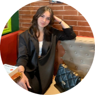

|  | Ledia DakajElectronic Engineer. Student at Polytechnic University of Tirana |
| Name/Surname: | Ledia Dakaj |
| Address: | Street “Rruge Kavaje ”, Tiranë |
| Calls: | +355688185723 |
| Email: | lediadakaj@gmail.com |
| Nacionality: | Albanian |
| Date of birth: | 02/07/2002 |
| Gender: | Female |
| Motivated to further my professional training . Accurate and organized nature,reliable in assigned tasks, |
| and focused on details. |
| Oriented to solve the problem even under pressure without leaving behind the energetic and positive spirit. |
| Fluent at communicating in English and Albanian. |
| Willing to cooperate in teams to reach expectations, and enthusiastic about taking on new challenges. |
20 July 2021 – 28 September 2021 Costumer service ⃒ Call center (English language)
Coding and programming training,participation and certification by the:
Participation certifikates involved.
Nation language : Albanian
Other language : English
Self-evaluation[Europian level]
Meaning Speaking Writting LIstening Reading Interaction in speaking Productivity in speaking
B2 => Very Well => B2 => Very Well => C1 => Very Well => Very Well
Office Package (Word, Excel, Power point, Access, Outlook, Filmora, Canva etc).
| Perfectionist, sociable, able to communicate well and maintain relationships with others. |
| Ready to face challenges and identify possible solutions. |
| Interested in further professional development. |
| Adaptive to the environment and always ready to fulfill certain requirements and tasks. |
| Ambitious, positive, energetic, practical and sharp eyed for details. |
{kind=link}
{kind=link}
{kind=link}
{kind=link}
{kind=link}
{kind=link}